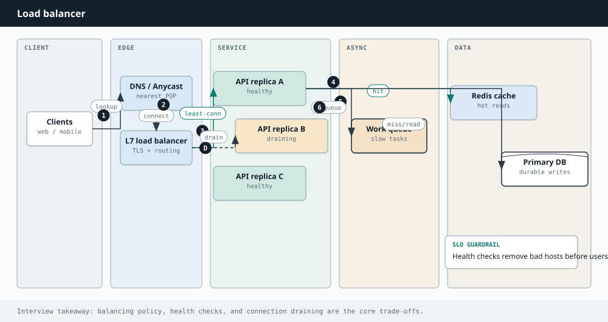

System Design
Chapter 21
Scaling and load balancing

B U I L D I N G B L O C K S
There are only two ways to handle more load. Make one machine bigger, or add more machines. The first hits a ceiling fast and gives you a single point of failure. The second is how real systems grow, and a load balancer is the piece that makes it possible.
Vertical vs horizontal scaling
Vertical scaling means a beefier server: more CPU, more memory. It is simple and needs no code changes, but you cannot buy an infinitely large machine, and if it dies, everything dies with it.
Horizontal scaling means many ordinary servers working together. It scales almost without limit and survives individual failures, but it forces you to design for a fleet: no server can hold state that another server would need.
PROS CONS Horizontal scaling has no hard ceiling, Your services must be stateless, which just add machines takes design effort One machine failing does not take the You now need a load balancer and system down shared storage for state You can scale up for peak and down to Distributed systems bring their own save money bugs and complexity
One entry point spreads traffic across many identical, stateless servers. A load balancer sits in front of your servers and spreads incoming requests across them, so no single machine is overwhelmed. It also checks the health of each server and quietly stops sending traffic to one that stops responding. Common ways to choose a server are round robin (take turns), least connections (send to the least busy), and hashing on something like the client IP (so a client Balancers work at two levels. A layer 4 balancer routes on IP and port without looking inside the request, which is fast. A layer 7 balancer reads the actual request, so it can route by URL path or cookie, at a little more cost. The key rule that makes all of this work is to keep your servers stateless: store session data in a shared cache or database, so any server can handle any request If you have one load balancer, it becomes the thing that can take everything down. In real systems the balancer itself is made redundant, with a standby ready to take over, so no
Why stateless servers are the whole trick
Horizontal scaling only works because every server is interchangeable, and that only holds if servers keep no local state. Push session data into a shared store so any server can handle any request, which is what lets you add or remove machines freely and lets the load balancer send a user to a different server each time. The balancer also runs continuous health checks, so the moment a server stops responding it is pulled from rotation and traffic reroutes to the healthy ones, making a single failure invisible. The balancer itself is made redundant with a standby, so it does not become the one thing that can take everything down. health checks pull the dead server out; traffic reroutes Server 1 healthy X Client Load balancer Server 2 down Server 3 healthy When a server fails its health check, the balancer stops sending it traffic and the rest carry on.
Balancer algorithm How it picks a server Round robin take turns evenly, simple and common Least connections send to the least busy server IP hash same client tends to hit the same server Weighted bigger servers get proportionally more traffic